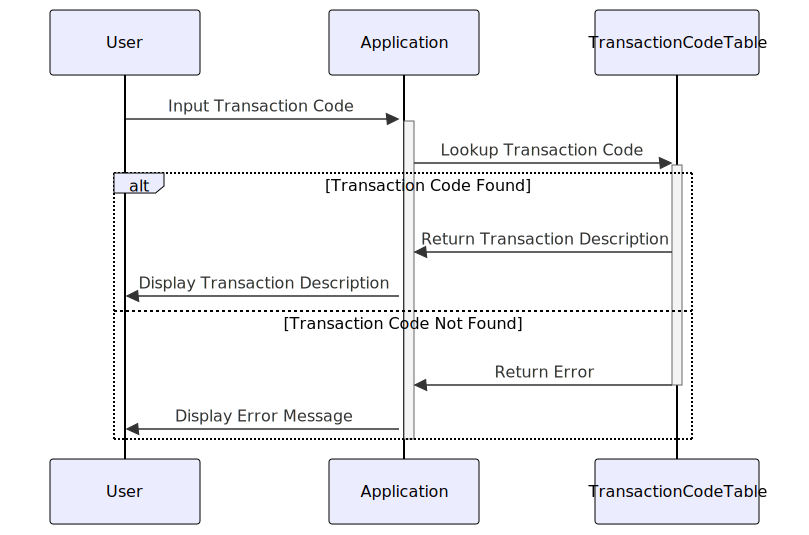

Gerado em: 1º de outubro de 2024
Título do Documento: Tradutor de Código de Tipo de Transação
Descrição Resumida:
Este documento descreve a funcionalidade de um programa projetado para traduzir códigos numéricos de transação em descrições amigáveis ao usuário. Este programa visa melhorar a clareza e transparência dos dados de transações para vários usuários, incluindo clientes, analistas e representantes de atendimento ao cliente.
Histórias de Usuário:
Como analista de dados, preciso ser capaz de entender o significado dos códigos de transação para analisar com precisão os dados de transações.
Épico Relacionado:
4 - Processamento de Transações - Este épico visa processar vários tipos de transações de forma eficiente, precisa e segura, garantindo a integridade dos dados e conformidade regulatória.
Requisitos Funcionais:
- Entrada de Código de Transação: O sistema deve fornecer um mecanismo para inserir um código de transação.
- Pesquisa de Código: O sistema deve ser capaz de pesquisar a descrição de um código de transação em uma lista predefinida.
- Saída de Descrição: O sistema deve exibir a descrição associada ao código de transação inserido.
- Regra de Negócio: Se o código de transação inserido não existir na lista predefinida, o sistema deverá exibir uma mensagem de erro.
Requisitos Não Funcionais:
- Desempenho: O sistema deve responder a pesquisas de código de transação rapidamente (dentro de um tempo aceitável definido).
- Disponibilidade: O sistema deve estar disponível durante o horário comercial para tradução do código de transação.
- Manutenibilidade: O sistema deve ser projetado de forma a permitir atualizações fáceis na lista de códigos de transação.
Critérios de Aceitação:
- O sistema traduz com precisão todos os códigos de transação definidos para suas descrições correspondentes.
- O sistema exibe uma mensagem de erro apropriada para códigos de transação inválidos ou indefinidos.
- O tempo de resposta do sistema para pesquisa de código está dentro dos limites aceitáveis.
Melhorias de Código:
- Implementar o registro de erros para rastrear pesquisas de código inválidas ou outros problemas potenciais.
- Adicionar funcionalidade para permitir que usuários autorizados atualizem a lista de códigos de transação.
- Implementar um mecanismo de cache para códigos acessados com frequência para melhorar o desempenho.
Melhorias de Segurança:
- Restringir o acesso à lista de códigos de transação e quaisquer funções de modificação apenas ao pessoal autorizado.
- Implementar o registro de auditoria para rastrear todos os acessos e alterações feitas nos dados do código de transação.
Diagrama Conceitual:

–Made by “Smart Engineering” (by Compass.UOL)–